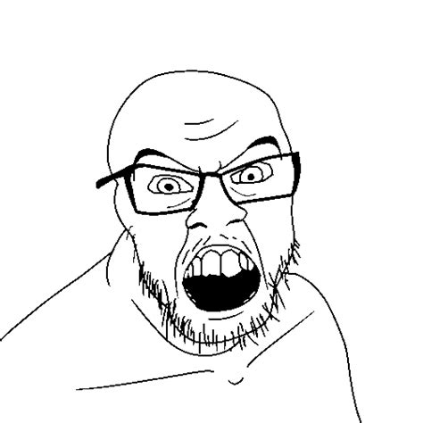
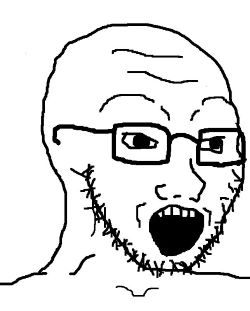
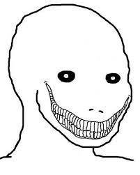
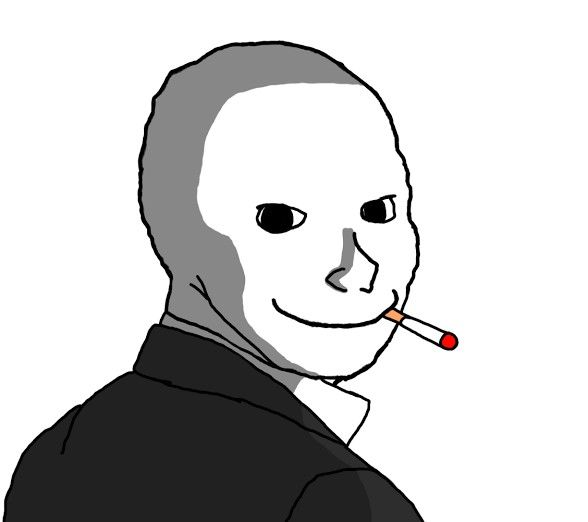

Wojak aka Feels guy is the most famous internet character. That’s the guy we can all relate to. Now he is on a mission to bring memecoin season back to Cronos and unite all under one flag. To remind all of us, only those who are patient will win in the end. Join us on our mission to make Cronos and Wojak an unstoppable force.




